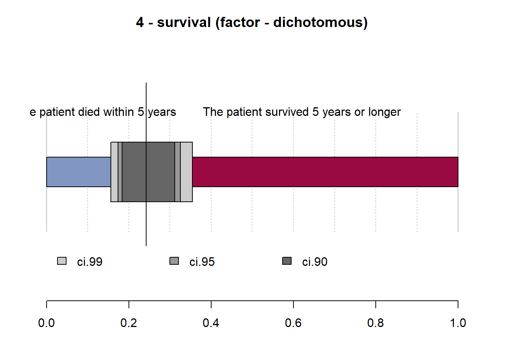

Analysis of Clinical Trial Data
Machine Learning
Tidymodels
Clinical Data
Classification
Predictive Analytics
R
Tidyverse
In this piece of an experimental project, we will examine factors that could lead to survival in breast cancer patients. Appropriate machine learning algorithm would be deployed to model the dataset using the tidymodels methodology in R.
Introduction
Breast cancer is a disease in which cells in the breast grow out of control. There are different kinds of breast cancer. The kind of breast cancer depends on which cells in the breast turn into cancer. Breast cancer can begin in different parts of the breast. Medical professionals often opined that earlier detection of breast cancer is key to survival.
In this piece of an experimental project, we will examine factors that could lead to survival in breast cancer patients. Appropriate machine learning algorithm would be deployed to model the dataset using the tidymodels methodology in R.
Load Libraries
Load Dataset
Code
# Load datasets
survival_tbl <- read_csv('dataset.csv')Code
# structure and data types of the fields
glimpse(survival_tbl)Rows: 120
Columns: 4
$ Age <dbl> 45, 74, 58, 66, 57, 42, 70, 62, 43, 46, 41, 67, 56, 63,~
$ Operation_year <dbl> 68, 65, 59, 58, 64, 63, 58, 66, 64, 65, 59, 66, 67, 66,~
$ nr_of_nodes <dbl> 0, 3, 0, 1, 1, 1, 4, 0, 0, 20, 0, 0, 0, 0, 11, 0, 8, 8,~
$ survival <dbl> 1, 2, 1, 1, 2, 1, 2, 1, 2, 2, 1, 1, 1, 1, 1, 1, 1, 1, 2~Data Wrangling
Convert the dependent variable survival to factor.
Code
# Convert the dependent variable `survival` to factor
survival_tbl %<>%
mutate(survival = if_else(survival == 1, "The patient survived 5 years or longer", "The patient died within 5 years"),
survival = as.factor(survival))Exploratory Data Analysis of the Dataset
Code
glimpse(survival_tbl)Rows: 120
Columns: 4
$ Age <dbl> 45, 74, 58, 66, 57, 42, 70, 62, 43, 46, 41, 67, 56, 63,~
$ Operation_year <dbl> 68, 65, 59, 58, 64, 63, 58, 66, 64, 65, 59, 66, 67, 66,~
$ nr_of_nodes <dbl> 0, 3, 0, 1, 1, 1, 4, 0, 0, 20, 0, 0, 0, 0, 11, 0, 8, 8,~
$ survival <fct> The patient survived 5 years or longer, The patient die~Code
reactable(survival_tbl, searchable = TRUE, filterable = TRUE, sortable = TRUE, pagination = TRUE)Code
# brief data summary
summary(survival_tbl) Age Operation_year nr_of_nodes
Min. :30 Min. :58 Min. : 0
1st Qu.:44 1st Qu.:60 1st Qu.: 0
Median :54 Median :63 Median : 0
Mean :53 Mean :63 Mean : 4
3rd Qu.:62 3rd Qu.:66 3rd Qu.: 3
Max. :78 Max. :69 Max. :46
survival
The patient died within 5 years :29
The patient survived 5 years or longer:91
Code
# detailed summary
Desc(survival_tbl)------------------------------------------------------------------------------
Describe survival_tbl (tbl_df, tbl, data.frame):
data frame: 120 obs. of 4 variables
120 complete cases (100.0%)
Nr ColName Class NAs Levels
1 Age numeric .
2 Operation_year numeric .
3 nr_of_nodes numeric .
4 survival factor . (2): 1-The patient died within 5 years,
2-The patient survived 5 years or longer
------------------------------------------------------------------------------
1 - Age (numeric)
length n NAs unique 0s mean meanCI'
120 120 0 44 0 53.02 50.95
100.0% 0.0% 0.0% 55.10
.05 .10 .25 median .75 .90 .95
36.90 38.00 43.75 53.50 62.00 69.10 71.05
range sd vcoef mad IQR skew kurt
48.00 11.50 0.22 13.34 18.25 0.05 -0.90
lowest : 30.0 (2), 31.0, 33.0, 34.0, 35.0
highest: 72.0, 73.0, 74.0 (2), 76.0, 78.0
' 95%-CI (classic)------------------------------------------------------------------------------
2 - Operation_year (numeric)
length n NAs unique 0s mean meanCI'
120 120 0 12 0 63.10 62.48
100.0% 0.0% 0.0% 63.72
.05 .10 .25 median .75 .90 .95
58.00 58.00 60.00 63.00 66.00 67.00 68.05
range sd vcoef mad IQR skew kurt
11.00 3.41 0.05 4.45 6.00 -0.01 -1.26
value freq perc cumfreq cumperc
1 58 14 11.7% 14 11.7%
2 59 13 10.8% 27 22.5%
3 60 7 5.8% 34 28.3%
4 61 9 7.5% 43 35.8%
5 62 10 8.3% 53 44.2%
6 63 8 6.7% 61 50.8%
7 64 14 11.7% 75 62.5%
8 65 8 6.7% 83 69.2%
9 66 12 10.0% 95 79.2%
10 67 14 11.7% 109 90.8%
11 68 5 4.2% 114 95.0%
12 69 6 5.0% 120 100.0%
' 95%-CI (classic)------------------------------------------------------------------------------
3 - nr_of_nodes (numeric)
length n NAs unique 0s mean meanCI'
120 120 0 20 60 3.57 2.31
100.0% 0.0% 50.0% 4.82
.05 .10 .25 median .75 .90 .95
0.00 0.00 0.00 0.50 3.00 13.00 15.20
range sd vcoef mad IQR skew kurt
46.00 6.96 1.95 0.74 3.00 3.26 13.42
lowest : 0.0 (60), 1.0 (14), 2.0 (8), 3.0 (9), 4.0 (3)
highest: 19.0 (2), 20.0, 22.0, 35.0, 46.0
heap(?): remarkable frequency (50.0%) for the mode(s) (= 0)
' 95%-CI (classic)------------------------------------------------------------------------------
4 - survival (factor - dichotomous)
length n NAs unique
120 120 0 2
100.0% 0.0%
freq perc lci.95 uci.95'
The patient died within 5 years 29 24.2% 17.4% 32.6%
The patient survived 5 years or longer 91 75.8% 67.4% 82.6%
' 95%-CI (Wilson)
Code
# Survival Distribution
survival_tbl %>%
group_by(survival) %>%
summarise(Freq = n()) %>%
mutate(prop = Freq/sum(Freq)) %>%
filter(Freq != 0) %>%
ggplot(mapping = aes(x = 2, y = prop, fill = survival))+
geom_bar(width = 1, color = "white", stat = "identity") +
xlim(0.5, 2.5) +
coord_polar(theta = "y", start = 0) +
theme_void() +
scale_y_continuous(labels = scales::percent) +
geom_text(aes(label = paste0(round(prop*100, 1), "%")), size = 4, position = position_stack(vjust = 0.5)) +
scale_fill_manual(values = c("#fc0394","#03adfc")) +
#theme(axis.text.x = element_text(angle = 90), legend.position = "top")+
labs(title = "Patient survival distribution",
x = "",
y = "",
fill = "") +
theme(legend.position = "top") +
theme(title = element_text(family = "Sans", face = "bold", size = 16))Code
# Age Distribution
ggplot(survival_tbl, aes(Age)) +
geom_histogram(fill = "steelblue", color = "white") +
labs(title = 'Patient age distribution',
x = "Age",
y = "Frequency",
fill = "") +
theme(title = element_text(family = "Sans", face = "bold", size = 16)) +
theme_clean()Code
# Distribution of positive auxiliary nodes detected
ggplot(survival_tbl, aes(nr_of_nodes)) +
geom_histogram(fill = "steelblue", color = "white") +
labs(title = 'Distribution of positive auxiliary nodes',
x = "# of Auxiliary Nodes",
y = "Frequency",
fill = "") +
theme(title = element_text(family = "Sans", face = "bold", size = 16)) +
theme_clean()Code
# Counts of surgery performed yearly
survival_tbl %>%
mutate(Operation_year = paste0("19", Operation_year)) %>%
group_by(Operation_year) %>%
summarise(Count = n()) %>%
ggplot(aes(x = Operation_year, y = Count)) +
geom_bar(stat = "identity", width = 0.5, fill = "steelblue", color = "white") +
labs(title = 'Count of surgery performed yearly',
x = "Year of operation") +
theme(title = element_text(family = "Sans", face = "bold", size = 16),
axis.title = element_text(family = "sans", size = 10, face = "plain")) +
theme_clean() +
scale_y_continuous(labels = scales::comma) +
geom_text(aes(label = Count), size = 4)Modelling
Data Quality
Check dataframe for NAs
- No
NAis found. The dataset is complete without any missing values.
Code
# split data to train and test set
set.seed(1234)
split <- survival_tbl %>%
initial_split(prop = 0.75, strata = survival) # 75% training set | 25% testing set
df_train <- split %>%
training()
df_test <- split %>%
testing()Model Recipe
Code
rec <- recipe(survival ~ ., data = df_train)
# add preprocessing
prepro <- rec %>%
step_normalize(all_numeric_predictors()) %>%
prep()
preproDefine the model with parsnip
Code
## Logistic Regression
lr <- logistic_reg(
mode = "classification"
) %>%
set_engine("glm")Define models workflow
Code
## Logistic Regression
lr_wf <- workflow() %>%
add_recipe(prepro) %>%
add_model(lr)Model Fitting
Code
set.seed(1234)
## Logistic Regression
lr_wf %>%
fit(df_train) %>%
tidy()# A tibble: 4 x 5
term estimate std.error statistic p.value
<chr> <dbl> <dbl> <dbl> <dbl>
1 (Intercept) 1.29 0.283 4.57 0.00000483
2 Age -0.147 0.286 -0.515 0.606
3 Operation_year -0.0605 0.278 -0.218 0.828
4 nr_of_nodes -1.09 0.324 -3.37 0.000745 Obtaining Predictions
Evaluating model performance
-
kap: Kappa -
sens: Sensitivity -
spec: Specificity -
f_meas: F1 -
mcc: Matthews correlation coefficient
Logistic Regression
Code
lr_pred %>%
conf_mat(truth = survival, estimate = .pred_class) %>%
autoplot(type = "heatmap")Code
lr_pred %>%
conf_mat(truth = survival, estimate = .pred_class) %>%
summary()# A tibble: 13 x 3
.metric .estimator .estimate
<chr> <chr> <dbl>
1 accuracy binary 0.710
2 kap binary 0.136
3 sens binary 0.25
4 spec binary 0.870
5 ppv binary 0.4
6 npv binary 0.769
7 mcc binary 0.142
8 j_index binary 0.120
9 bal_accuracy binary 0.560
10 detection_prevalence binary 0.161
11 precision binary 0.4
12 recall binary 0.25
13 f_meas binary 0.308Roc Curve and AUC estimate
Code
prob_preds <- lr_wf %>%
fit(df_train) %>%
predict(df_test, type = "prob") %>%
bind_cols(df_test)
threshold_df <- prob_preds %>%
roc_curve(truth = survival, estimate = `.pred_The patient survived 5 years or longer`)
threshold_df %>%
autoplot()Code
roc_auc(prob_preds, truth = survival, estimate = `.pred_The patient survived 5 years or longer`)# A tibble: 1 x 3
.metric .estimator .estimate
<chr> <chr> <dbl>
1 roc_auc binary 0.402Variable Importance Plot
Relative variable importance plot
Code
final_lr_model <-
lr_wf %>%
fit(data = df_train)
final_lr_model== Workflow [trained] ==========================================================
Preprocessor: Recipe
Model: logistic_reg()
-- Preprocessor ----------------------------------------------------------------
1 Recipe Step
* step_normalize()
-- Model -----------------------------------------------------------------------
Call: stats::glm(formula = ..y ~ ., family = stats::binomial, data = data)
Coefficients:
(Intercept) Age Operation_year nr_of_nodes
1.2929 -0.1472 -0.0605 -1.0910
Degrees of Freedom: 88 Total (i.e. Null); 85 Residual
Null Deviance: 97
Residual Deviance: 81 AIC: 89Code
final_lr_model %>%
extract_fit_parsnip() %>%
tidy()# A tibble: 4 x 5
term estimate std.error statistic p.value
<chr> <dbl> <dbl> <dbl> <dbl>
1 (Intercept) 1.29 0.283 4.57 0.00000483
2 Age -0.147 0.286 -0.515 0.606
3 Operation_year -0.0605 0.278 -0.218 0.828
4 nr_of_nodes -1.09 0.324 -3.37 0.000745 Code
## variable importance plot
final_lr_model %>%
extract_fit_parsnip() %>%
vip() +
labs(title = 'Variables relative importance',
x = "") +
theme(title = element_text(family = "Sans", face = "bold", size = 16),
axis.title = element_text(family = "sans", size = 10, face = "plain")) +
theme_clean() +
scale_y_continuous(labels = scales::comma)